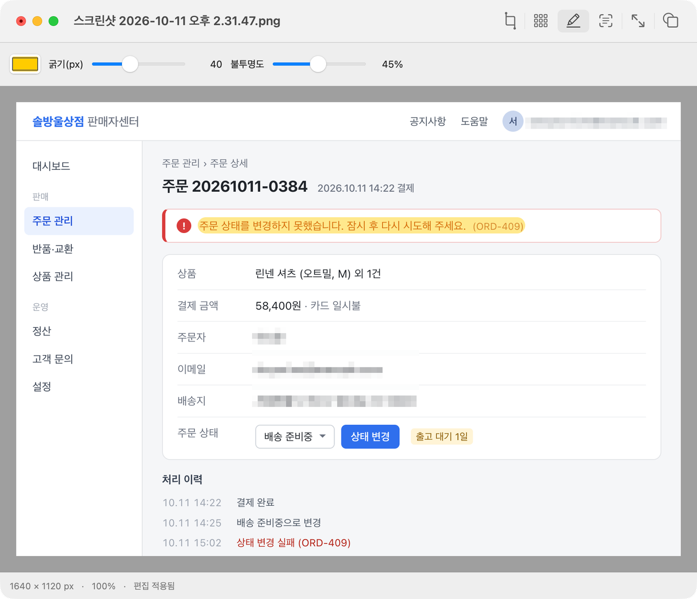

형광펜
반투명 마커로 눈에 띄게 표시합니다. 색상과 굵기, 불투명도를 고를 수 있습니다.
버그는 형광펜으로, 이메일은 모자이크로, 쓸데없는 부분은 잘라내고. 스크린샷을 보내기 전 그 한 번의 수정, Candy가 금방 끝냅니다.
macOS 14 이상 · Apple Silicon · 다운로드 2 MB

반투명 마커로 눈에 띄게 표시합니다. 색상과 굵기, 불투명도를 고를 수 있습니다.
영역을 직접 지정하거나, Apple Vision이 찾아낸 한글과 영문 텍스트를 확인한 뒤 한 번에 가립니다.
사각형을 그리고 테두리를 맞춘 다음, 그 부분만 새 이미지로 만듭니다.
비율을 유지한 채 줄이거나, 픽셀 크기를 직접 입력하거나, 90도씩 돌립니다.
투명한 부분을 단색으로 채웁니다. 투명도가 없는 형식으로 저장하기 전에 쓰면 됩니다.
첫 저장은 항상 새 파일입니다. 실행 취소는 몇 번이든 되돌아가고, 이미지와 문자 인식은 Mac 밖으로 나가지 않습니다.
열기 PNG · JPEG · WebP · HEIC · AVIF · GIF · TIFF · BMP · PSD · RAW 등 macOS가 읽는 모든 형식
저장 PNG · JPEG · HEIC · WebP · AVIF (macOS 26) · TIFF · GIF · BMP · JPEG 2000 · TGA
Kitty 그래픽을 지원하는 터미널이라면 tmux 안에서도 이미지가 바로
보입니다. candy inspect는 파일을 열지 않고 형식과
크기, 색상 정보를 알려 줍니다. 자르기, 크기 조절, 회전, 모자이크,
배경 채우기는 앱과 같은 엔진으로 처리되고, 새 파일로 저장하거나
원본에 바로 덮어쓸 수 있습니다. 화면을 보면서 고치고 싶을 때는
candy edit로 앱 창을 띄우고 셸은 바로 돌려받습니다.
# 보기
candy photo.png
candy inspect photo.heic
# 셸을 떠나지 않고 편집
candy crop photo.png --rect 20,30,300,200 -o crop.png
candy resize photo.heic --width 1200 -o small.webp
candy rotate photo.jpg --cw --in-place
candy mosaic shot.png --text -o safe.png
candy flatten logo.png --background '#ffffff' -o flat.jpg
# 앱에서 편집, 셸은 그대로
candy edit photo.pngbrew install --cask rath/tap/candymacOS 14 이상의 Apple Silicon Mac에서 동작합니다. Developer ID로 서명하고 Apple 공증을 받았습니다. 앱 전체가 4 MB가 안 되고, 켜 두면 메모리를 30 MB 정도 씁니다. 웹뷰 없이 AppKit과 Rust로만 만들었습니다.